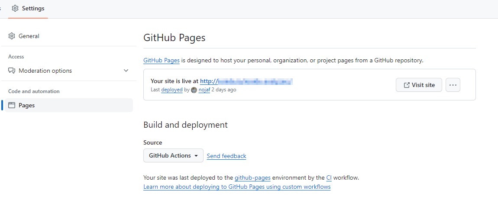

Getting Started
From zero to hero: deploying to GitHub Pages
This guide is meant for a typical setup of open-source projects on GitHub.
We start from a repository without any documentation and aim to end up with a published website on GitHub Pages.
Install the local tool
If you don't have a dotnet tool manifest, you can create one using dotnet new tool-manifest.
Next, we can install fsdocs-tool using dotnet tool install --local fsdocs-tool.
It is recommended to install this tool as a local tool because it allows us to update to newer versions of the tool at our own pace.
Create the docs folder
After we've installed the tool, we can run dotnet fsdocs --help and see the available commands.
Both build and watch will generate the documentation for a solution and an input folder.
The default folder for --input is the ./docs folder, relative to the current working directory.
Typically, your project will be structured like this:
/repository-root
YourSolution.sln
./docs
index.md
other-file.md
./src
./Project1/Project1.fsproj
./Project2/Project2.fsproj
It is recommended to have a single solution at the root. In some editors, it is more convenient to open a solution at the root, to easily manipulate any file in the root repository folder.
When users clone your repository locally, they cannot be confused on how they need to open the project in their IDE.
⚠️ Please avoid putting your solution in the src folder. When we open that solution, it can be more difficult to edit files in the docs folder, as we can sometimes only see the src folder.
That being said, let's create the docs folder and a first Markdown file named index.md.
When fsdocs runs, it will transform this index.md file to index.html, which will be served at the root.
We can put # Hello world in the markdown file for now.
Having this in place, should already serve the first page when we start the watch command:
dotnet fsdocs watch
Open http://localhost:8901 and you should see our first page!
🪄 You might notice that there are some images missing. You can add these in the docs folder in the right location.
Generating API documentation
By default, fsdocs will generate API documentation for the configured --projects.
When this flag is not specified, fsdocs will look for solutions or projects in the working directory.
It will filter these found projects, the requirements are:
- Having
<OutputType>library</OutputType> - Having a binary, so you need to build your project first before the documentation can be generated.
- Not having
<IsTestProject>true</IsTestProject> - Having
<GenerateDocumentationFile>true</GenerateDocumentationFile>
🪄 If you made some changes in order to adhere to the rules, you may want to remove the .fsdocs/cache file.
Adding the missing properties
After our initial watch run, you may have noticed that some links aren't working yet.
License, Releases Notes and Source Repository can be provided by setting MSBuild properties.
You can either add these properties to a single .fsproj file, or more typically, add them to a Directory.Build.props file.
The simplest Directory.Build.props file:
|
🪄 If you don't have any release notes yet, you could consider using Ionide.KeepAChangelog.
Running dotnet fsdocs watch will now yield:
root --> https://github.com/fsprojects/FSharp.AWS.DynamoDB/
...
fsdocs-license-link --> https://github.com/fsprojects/FSharp.AWS.DynamoDB/blob/master/License.md
fsdocs-release-notes-link --> https://github.com/fsprojects/FSharp.AWS.DynamoDB/blob/master/RELEASE_NOTES.md
...
fsdocs-repository-link --> https://github.com/fsprojects/FSharp.AWS.DynamoDB/
⚠️ Again, you might need to remove .fsdocs/cache in order for changes to be picked up!
<PackageProjectUrl> is actually a very important property when you run dotnet fsdocs build.
build will generate static files for the targeted production environment. In our case, this will be GitHub Pages.
Pages will host your files from https://github.com/user/project on https://user.github.io/project/ by default.
You can change this by adding a custom domain so we need to be sure that all links and urls will be generated correctly during a build.
Let's now run dotnet fsdocs build.
<PackageProjectUrl> will replace the {{root}} substitution, which is used all over the place in the default template.
⚠️ You want to ensure that the static files in the output folder (after running the build) have the correct links.
Ignore generated files
Alright, at this point we've made a lot of progress. If you are using git you want to add the following to your .gitignore file.
|
Ship it!
Once we are satisfied with our documentation, we want to publish it to GitHub Pages. We can use GitHub Actions to deploy our website.
Deploy to Pages from GitHub Actions must be enabled in the repository settings:

The typical flow is to publish your documentation after a release or after new commits were added to the default branch.
Let's create a very basic Action that will deploy our website after pushing to the main:
Create a file .github/workflows/docs.yml:
|
⚠️ Careful yaml is indentation sensitive!
Next steps
Mission accomplished, right? If everything went well, you should have a published website at this point!
Here are some next steps you could consider:
Use fsx file in your documentation
Create documentation using Literate Scripts. A typical flow here is that you load your locate project binary into a script and create examples using the latest code:
#r "../src/Project1/bin/Debug/net6.0/Project1.dll"
open Project1
// Actual consumption of your project!
let result = SomeType.SomeMethod("foo")
When using the --strict flag in dotnet fsdocs build, your documentation generation will fail if your script contains errors.
This is useful to ensure your documentation is always in sync with your latest public API!
Automatically update to newer versions of fsdocs-tool
Using Dependabot you can easily receive new PR's with updates to your dotnet dependencies.
Create a .github/dependabot.yml file with:
|
This will automatically create a new PR when there is an update to the fsdocs tool.
⚠️ P️lease be very careful, if you have followed along, we don't have any GitHub Actions right now that run against pull requests!
It is recommended to have an Action that builds your documentation against any incoming changes.
You typically want to lint code, run unit tests and perform other useful checks as well!
Example Action, .github/workflows/ci.yml:
|
⚠️ Also, never trust any update to fsdocs blindly, always check the release notes to see if there are any breaking changes.